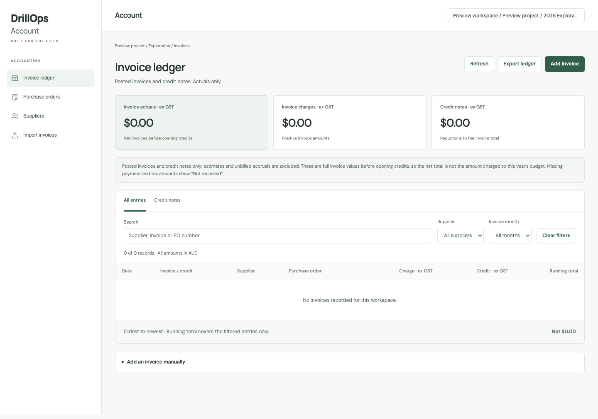

Bring in the records.
Import invoice records into the accounting workspace and maintain the supplier details alongside them.
Invoices / Credits / Purchase orders
DrillOps Account
A readable invoice ledger, with credits, suppliers and purchase orders close at hand.
Account brings the accounting records into their own workspace. Search the ledger, inspect an invoice and follow up the records behind the work.

THE WORKFLOW
Start with the invoice record. Use the project and program context to find the relevant costs, then inspect the details and supporting information.
Import invoice records into the accounting workspace and maintain the supplier details alongside them.
Search and filter invoices and credits. See the reference, supplier and value without working through a data-entry screen.
Open the invoice and review the available information. Keep purchase orders accessible in the same app.
IN THE WORKSPACE
The invoice ledger focuses on actual invoice records and credits. It excludes estimated accruals.
Find the purchasing records for your project without leaving the accounting workspace.
Maintain the full supplier list used by your accounting records.
Work within the selected client, project and program, using the same organisation account as EOS and Project.
Account
Sign in with the account provided by your organisation.